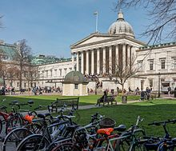
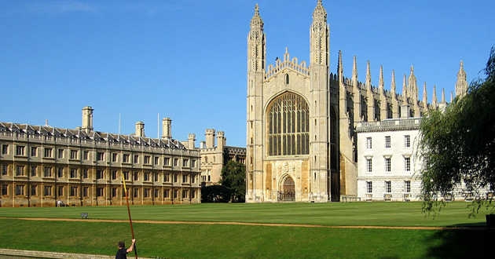
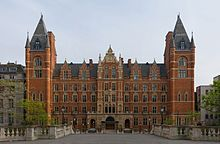

Educacion superior
Londres es una ciudad con gran peso en el mundo de la educación superior y la investigación, y sus 43 universidades conforman la mayor concentración de centros de estudios superiores de toda Europa.19 En el curso 2008-09 la ciudad tuvo una población universitaria que rondaba los 412 000 estudiantes, aproximadamente el 17 % de todo el país, de los cuales 287 000 estaban registrados en carreras universitarias y 118 000 en estudios de posgrado.226 En ese mismo curso escolar hubo 97 150 estudiantes extranjeros en Londres, lo que suponía un 25 % de todos los del Reino Unido.226

En Londres están algunas de las instituciones educativas más prestigiosas del mundo. En la lista QS World University Rankings elaborada en 2012, el University College de Londres estaba en el 4º lugar, el Imperial College London en el 6º y el King's College de Londres en el 26º.227 La London School of Economics es considerada la institución líder mundial en la investigación y desarrollo en ciencias sociales228 y la London Business School está entre las mejores escuelas de negocio, pues su programa MBA fue considerado el mejor del mundo por la revista Financial Times. Con sus 125 000 estudiantes, la Universidad de Londres, que es pública, es la mayor universidad de educación presencial de todo el continente.230 Está compuesta por cuatro universidades y sus respectivas facultades —el King's College, Queen Mary, Royal Holloway y University College—, además de varias instituciones más pequeñas y especializadas como Birkbeck, Courtauld Institute of Art, Goldsmiths, Guildhall School of Music and Drama, Institute of Education, London Business School, London School of Economics, Escuela de Londres de Higiene y Medicina Tropical, Royal Academy of Music, Central School of Speech and Drama, Royal Veterinary College y la Escuela de Estudios Orientales y Africanos.231 Cada uno de estos miembros de la Universidad de Londres tiene sus propios procedimientos de admisión y sus propios premios a los estudios que imparten.
En la ciudad hay otras instituciones de estudios superiores ajenas a la Universidad de Londres, entre ellas la Universidad de Brunel, la City University London, el Imperial College London, la Universidad de Kingston, la Universidad Metropolitana de Londres (que con 34 000 estudiantes es la mayor universidad unitaria de la ciudad),232 la Universidad London South Bank, la Universidad de Middlesex, la University of the Arts London (la más grande de Europa en su campo),233 la Universidad East London, la Universidad West London y la Universidad de Westminster. Además, en la capital británica existen tres universidades internacionales: Regent's College London, Richmond, The American International University y Schiller International University.

Londres cuenta con cinco grandes facultades de medicina —Barts and The London School of Medicine and Dentistry, King's College London School of Medicine (la mayor escuela de medicina de Europa), Imperial College School of Medicine, UCL Medical School y St George's— y numerosos hospitales de prácticas a ellas asociados. La ciudad también es un lugar destacado para la investigación biomédica gracias a sus centros académicos de ciencias de la salud: Imperial College Healthcare, King's Health Partners y UCL Partners (el mayor centro de este tipo en todo el Viejo Continente).234 Entre las muchas escuelas de negocio de la ciudad están Cass Business School, ESCP Europe, European Business School London, Imperial College Business School y London Business School. Asimismo, en Londres se hallan varias instituciones especializadas en el mundo de las artes: Academy of Live and Recorded Arts, London Contemporary Dance School, Royal Academy of Dramatic Art, Royal College of Art, Royal College of Music y Trinity Laban.
